- 20 mai 2013
- 7 juin 2013
- 9 juin 2013
- 21 juin 2013
- 23 juin 2013
- 29 juin 2013
- 30 juin 2013
- 2 juillet 2013
- 3 juillet 2013
- Après...
-
20 mai 2013
E. Snowden quitte Hawaï pour Hong-kong. Il espère échapper aux éventuelles poursuites.
-
7 juin 2013
Le Washington Post et le Guardian révèlent l’existence du Prism. Lancé en 2007, il permet à l'agence américaine d'avoir accès aux serveurs de géants du Web, comme Microsoft, Yahoo !, Youtube, Apple, Facebook ou Skype. Grâce à Prism, les Américains peuvent intercepter les messages d'internautes du monde entier.
-
9 juin 2013
Edward Snowden prend la parole publiquement lors d’un entretien au Guardian et explique qu'il a organisé ces fuites pour ne pas " laisser le gouvernement américain détruire la vie privée, la liberté d'internet et les libertés essentielles des gens du monde entier".
-
21 juin 2013
Snowden accorde un entretien à un quotidien chinois dans lequel il affirme que les États-Unis surveillent des “centaines de milliers d’ordinateurs” dans le monde. Le lendemain, le FBI confirme qu’une enquête pénale a été lancée contre Snowden. Le département américain de la Justice annonce également avoir inculpé Snowden pour espionnage, vol et utilisation illégale de biens gouvernementaux et demande à Hong Kong de l’interpeller.
-
23 juin 2013
E. Snowden se rend en Russie dans un aéroport Moscovite.
-
29 juin 2013
Le magazine allemand Der Spiegel révèle un nouveau scandale : Prism aurait également servi à espionner des responsables de l’Union Européenne, à Washington, à l’ONU et même à Bruxelles.
-

30 juin 2013
Le Guardian révèle à son tour que les États-Unis avaient 38 cibles dont la France, l’Italie ou encore l’Allemagne. F. Hollande demande alors que ces pratiques cessent. Ces révélations interviennent au moment où l’Union Européenne et les États Unis s’apprêtent à négocier un nouvel accord de libre échange. .
-

2 juillet 2013
Après avoir déposé 21 demandes d’asile, E. Snowden reste réfugié dans un aéroport de Moscou. Aucun pays n’a répondu positivement pour le moment.
-
2 juillet 2013
La France souhaite une “suspension temporaire” des négociations de l’accord de libre échange. L’affaire d’espionnage vire au conflit diplomatique, politique et économique
-
Après...
Après de nombreuses révélations concernant l’affaire Snowden et la surveillance de masse, E. Snowden obtient l’asile en Russie, où il habite encore.